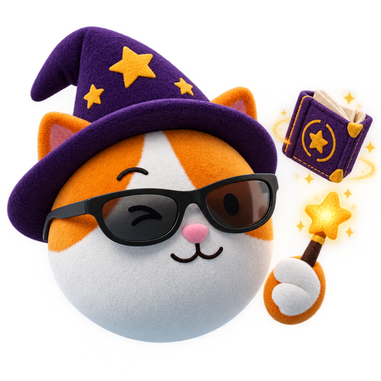

🎃 Хэллоуин-тест · 2 минуты
А какой ты персонаж из фильмов ужасов? 👻
Кто ты из мира Гарри Поттера?

Семь вопросов — и Волшебная Шляпа Chat & Chill скажет, кто ты: храбрый герой, гений зельеварения или тот самый загадочный профессор. В конце — подборка английских слов под твой характер. Accio, тест!
Тест сделан с любовью к магии и английскому · Chat & Chill